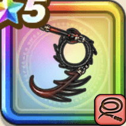

絶美なる妖鞭
攻略班 8.0点 / しばり打ちらせん打ち魔性の吐息地這い大蛇反魔の妖術
くわしい特徴
【レベル別習得スキル】 Lv1【ニンジャ】攻撃力+5 Lv10しばり打ち（消費MP：9）敵をムチでしばり敵1体に威力180%の体技ダメージを与えたまに麻痺させる Lv15らせん打ち（消費MP：9）らせん状に打ち敵1体を威力180%の体技ダメージを与えたまに混乱させる Lv20魔性の吐息（消費MP：32）敵全体にバギ属性のブレス大ダメージを与え、幻惑状態にし、まれに攻撃力を下げる Lv30地這い大蛇（消費MP：43）敵1体に600%のジバリア属性体技ダメージを与える。対象に付与されている効果の数に応じて追加効果が発生する▶追加効果の詳細を確認する Lv35怪人系へのダメージ+5% Lv40けもの系へのダメージ+5% Lv45攻撃力+12 Lv50反魔の妖術（消費MP：20）戦闘開始から2ターンの間、自分が受けた呪文を敵に跳ね返す光の壁を作り、ランダムな敵1体の攻撃力を下げる 【限界突破スキル】 1凸スキルの斬撃・体技・ブレスダメージ+7% 2凸スキルの斬撃・体技・ブレスダメージ+7% 3凸スキルの斬撃・体技・ブレスダメージ+7% 4凸スキルの斬撃・体技・ブレスダメージ+7%